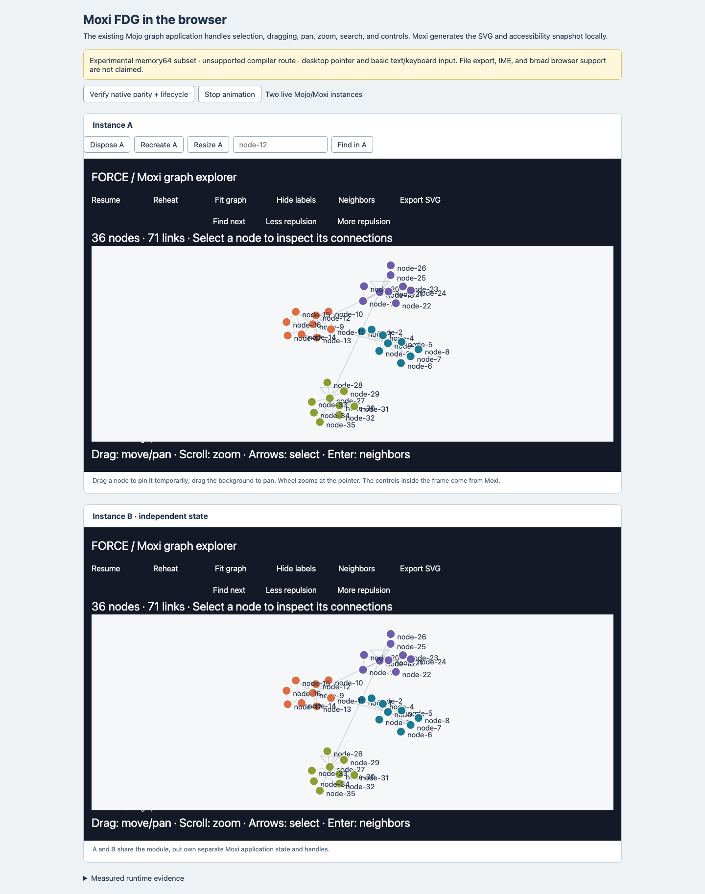
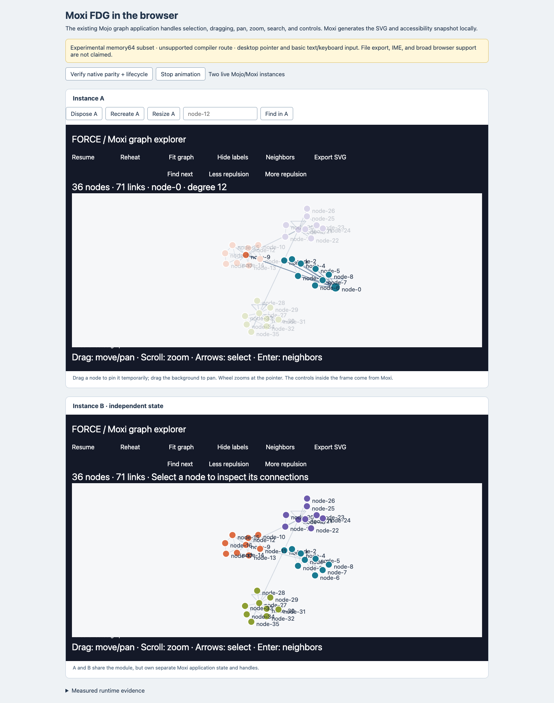
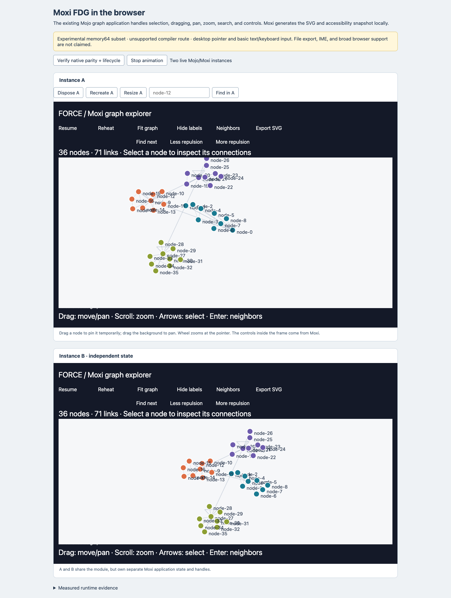
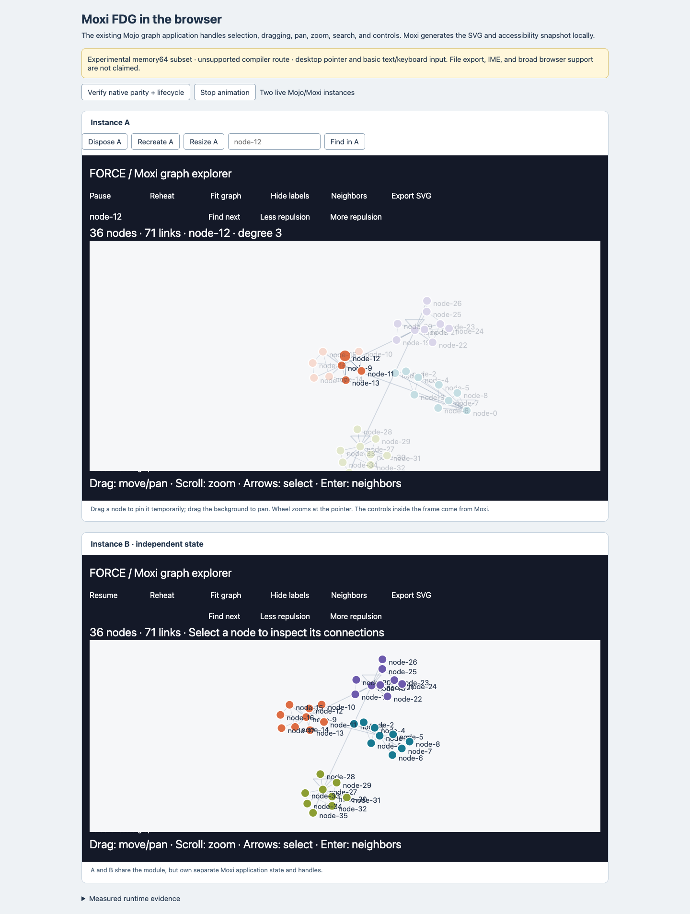
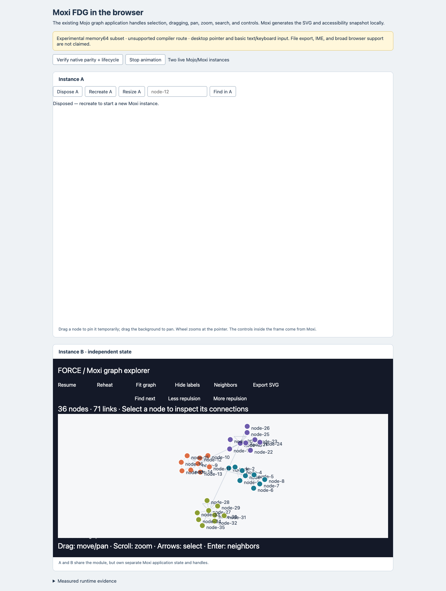
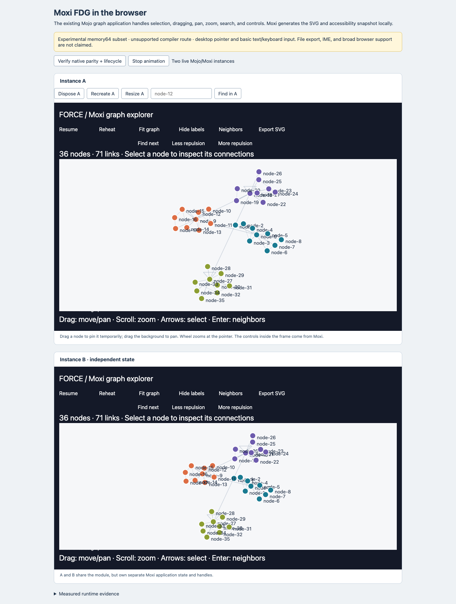
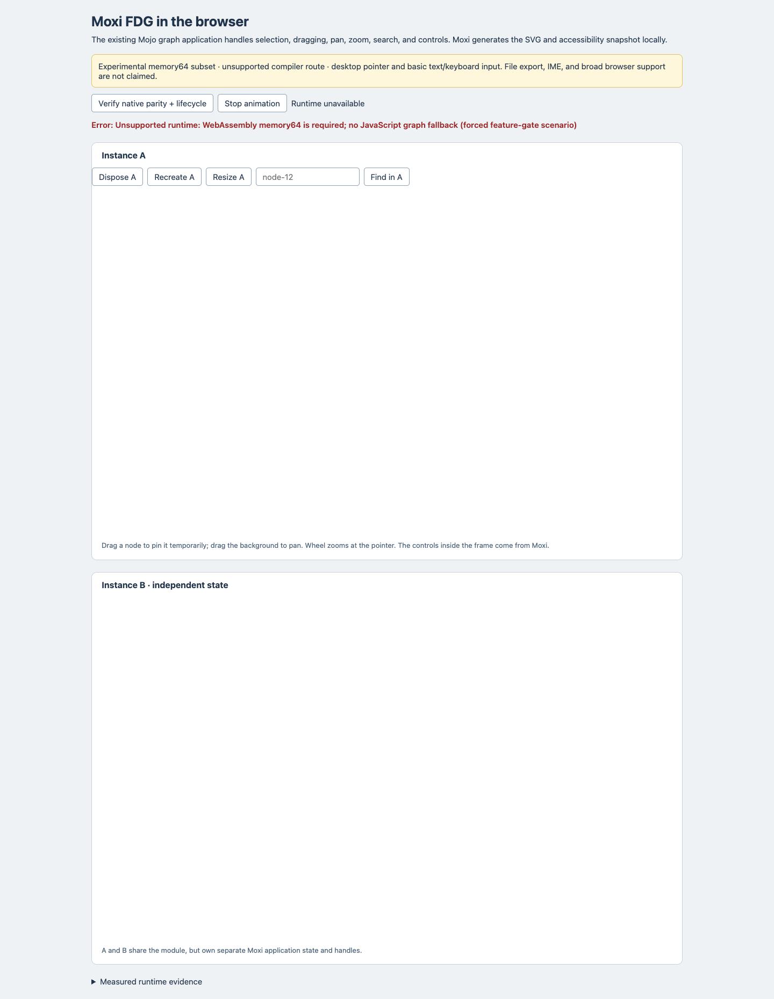

browser-fdg · 5921b478e6dd9838376ed771f6965e46e76e31ad · Playwright headless Chrome; collaborative preview drag failed twice (see README) · Mojo App[GraphApp] → Wasm64 → Moxi SVG + MoxiWebHost · sample_graph: 36 nodes; 100 real solver frames then Fit and Pause; working tree; see sourceDigest for experiment inputs; source SHA256 0a2767c1f10d3292a8237ddf57d91130887474558f8e172263fed2256b4aaf44

initial Action: Load the page; both existing Moxi graph apps settle, fit and pause. Expected: Both panes contain the 36-node Mojo graph and Moxi controls.
initial · browser · 1440 × 1826 pixels

dragging Action: Click node-0; ArrowRight selects node-1; drag node-0 by 80×45 CSS pixels and hold. Expected: Node-0 follows the pointer and is pinned while held; instance B stays unchanged.
interaction · browser · 1440 × 1826 pixels

pan-zoom-resize Action: Drag empty canvas left/up, wheel up 160 units, then click Resize A. Expected: Moxi viewport and SVG resize to 720px; pan/zoom affect A only.
interaction · browser · 1440 × 1906 pixels
restart Action: Use the Moxi Resume/Pause control twice, then Reheat. Animation is held for capture. Expected: Reheat resets solver alpha and changes the Moxi control back to Pause.
result · browser · 1440 × 1906 pixels

two-instances Action: Click the Moxi search field, type node-12, and press Enter. Expected: Moxi text/key dispatch selects node-12; B retains its initial state.
result · browser · 1440 × 1906 pixels

disposed Action: Click Dispose A. Expected: A has no rendered graph or accessibility overlay; B remains live.
recovery · browser · 1440 × 1906 pixels

recreated Action: Click Recreate A; attempt teardown with the old raw handle. Expected: New independent state appears; stale handle returns invalid-handle without affecting it.
recovery · browser · 1440 × 1906 pixels

unsupported Action: Load ?unsupported to force the unsupported feature path. Expected: A clear memory64-required error appears; no JavaScript substitute graph.
recovery · browser · 1440 × 1860 pixels
Contact sheetReproduce
node experiments/browser-moxi/browser-check.mjs (see README for environment)
P01: actual Mojo App[GraphApp] through experimental Wasm64 retargeting. Capture provenance and source hashes are in captures.json.
Screenshots show recorded states. They do not establish latency, scientific accuracy, physical IME, screen-reader behavior, or human usability.